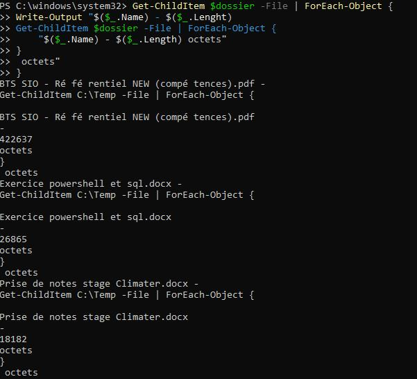
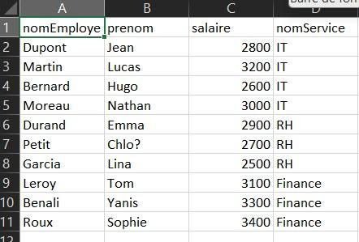

Contexte : Développement d'outils d'extraction et requêtage automatique sur serveur dédié.
Cahier des charges : Concevoir une base de données de test sur le serveur SRV-SQLEAF-LAB (base MINIPROJET) et développer des scripts PowerShell autonomes capables d'interroger la base et d'exporter les résultats pour les métiers sans accès direct à SQL Server.
Démarche et mode opératoire :
Employes et Services sous SQL Server avec clés primaires/étrangères et jeu de données de test.Invoke-Sqlcmd pour exécuter des requêtes dynamiques basées sur une saisie utilisateur (ex : choix du service).COUNT, AVG, MAX).Export-Csv).Preuves de réalisation :

Figure 3 : Apprentissage de PowerShell (commande Get-ChildItem avec ForEach-Object)

Figure 4 : Résultat du mini-projet — la table des employés avec leur service et leur salaire